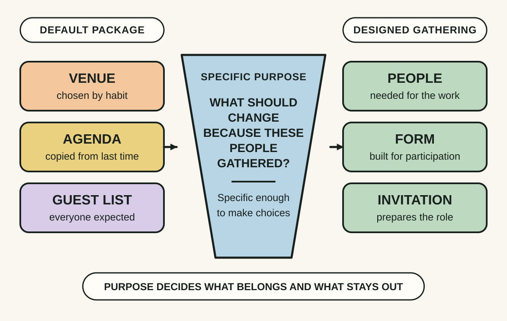
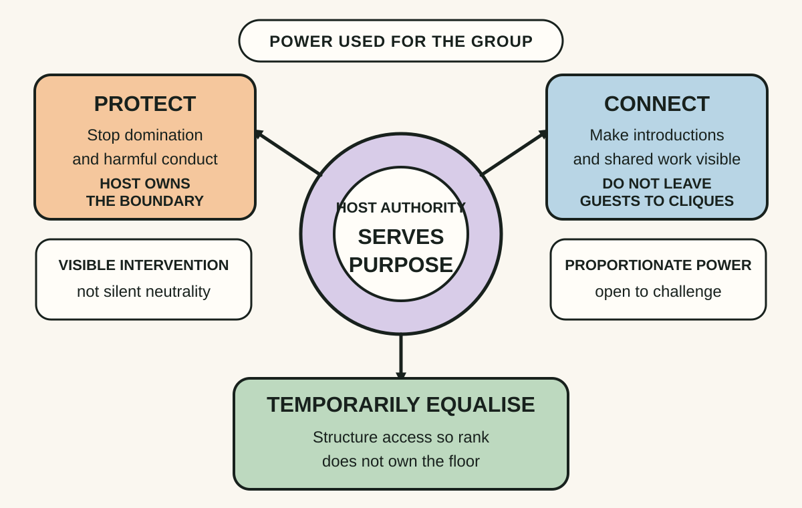
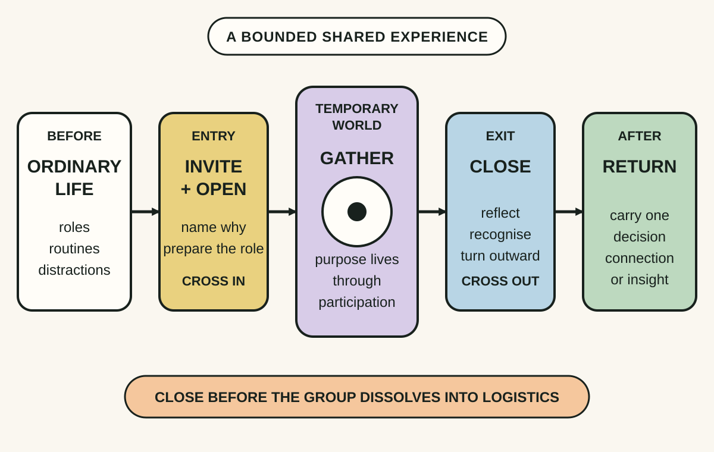

Daily lesson ·
The Art of Gathering
Make time together more meaningful by defining a specific purpose, using host authority in service of the group and designing the gathering's entry and exit rather than leaving connection to chance.
Idea 1
Let purpose choose the form #
The idea
Parker argues that familiar labels such as meeting, dinner, conference or birthday can smuggle in a complete format before anyone asks why the people should gather. The result may be competently organised yet unable to meet the need that justified bringing people together.
She recommends finding a specific, disputable purpose, then using it to decide whom to invite, where to meet, how people participate and what to leave out. A purpose such as reviewing progress is too broad; identifying the decision, relationship or transition that needs attention gives the host something that can shape the event.

Why it matters
Without a purpose strong enough to make choices, agendas accumulate inherited activities and participants cannot tell what their presence is meant to contribute. A sharper purpose makes inclusion, preparation and success discussable.
Apply it today
Choose one upcoming meeting or social event and finish this sentence: We are gathering so that this group can...
Test each planned activity against that sentence. Remove, replace or shorten one element that serves convention more than purpose.
Caveat or failure mode
A sharp purpose can become a pretext for excluding inconvenient people or predetermining the outcome. Check who defines the purpose, whose interests it serves and whether affected people need representation even when their presence complicates the format.
Idea 2
Practise generous authority #
The idea
Parker rejects the idea that a generous host should simply step back and let the gathering run itself. Every gathering already contains power: someone chose the people, time, place and acceptable behaviour. When the host refuses to use that authority, dominant guests, inherited status and unclear norms often take over.
Her alternative is generous authority: use the host's power for the good of the group and its purpose. She describes three responsibilities in particular: protect guests from harmful or monopolising behaviour, connect them to one another and temporarily equalise participation where ordinary hierarchy would otherwise decide whose voice counts.

Why it matters
Silence from the host does not create neutrality. It can leave quieter participants to manage interruption, insiders to cluster together and formal rank to determine the conversation. Visible stewardship makes responsibility inspectable.
Apply it today
For one upcoming gathering, predict where one person, role or topic could crowd out the rest of the group.
Write a proportionate intervention, such as a turn-taking rule, a direct introduction or a stated boundary, and decide how you will explain its purpose.
Caveat or failure mode
Authority described as generous can still be coercive, culturally narrow or self-serving. A host should not force disclosure, manufacture false equality or silence legitimate disagreement. State boundaries, offer meaningful ways to decline and remain open to challenge from the people affected.
Idea 3
Design the thresholds #
The idea
Parker treats a gathering as a temporary world with thresholds, not just a block of scheduled content. Preparation and invitation help people leave ordinary roles behind; the opening establishes why this group is here and how it will be together. Starting with housekeeping spends the moment of greatest attention on logistics instead of entry.
The ending deserves equal design. A strong close helps participants notice what happened, acknowledge the temporary world is ending and carry something back into ordinary life. Allowing the gathering to dissolve into departures and practical notices can waste the meaning the group created.

Why it matters
Attention and emotion do not automatically align with the calendar. Clear thresholds reduce uncertainty at the start and keep the gathering's final impression from becoming a rush of logistics or scattered departures.
Apply it today
Write the first sentence for one upcoming gathering so it names why these people are here before giving logistics.
Write one closing prompt that asks participants to identify a decision, connection or insight they will carry out of the room.
Caveat or failure mode
Ritualised openings or reflective endings can feel manipulative, compulsory or culturally unfamiliar. Keep participation proportionate, explain unusual forms, provide accessible alternatives and let people leave safely without turning the close into a loyalty test.
Knowledge check · 6 questions
Learning check
Answer all 6, then check your answers. Your first result stays in this browser, and each explanation appears after you check. A 3-question review can appear on the homepage from tomorrow.
6 questions not yet answered.
Today's experiment · 10 minutes
Redesign one real gathering on paper
- Choose one gathering in the next seven days and write a specific purpose beginning: We are gathering so that...
- Circle the people and one activity essential to that purpose, then cross out one inherited element that does not help it.
- Write one host intervention that will protect, connect or temporarily equalise participation, including how you will explain it.
- Draft the first purpose-setting sentence and one final question that helps people carry something outward.
Observable result: You finish with a one-page gathering design containing a purpose, a deliberate inclusion choice, a transparent host intervention and clear entry and exit lines.
Retrieval practice
Spaced recall
- From The Good Life: what qualities distinguish dependable connection from a large contact list?
- From Working Identity: how could a new social setting let someone test a possible self through action rather than private reflection?
Verification
Source notes
These links support the attributed claims and edition details; applications and extensions are labelled in the lesson.
One-sentence takeaway